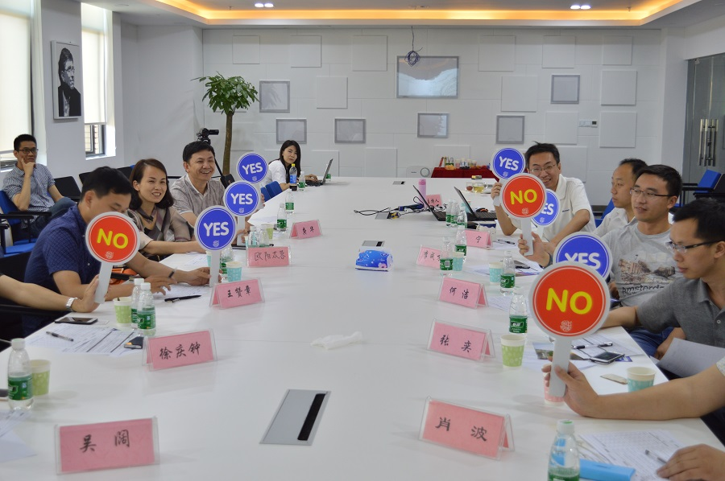
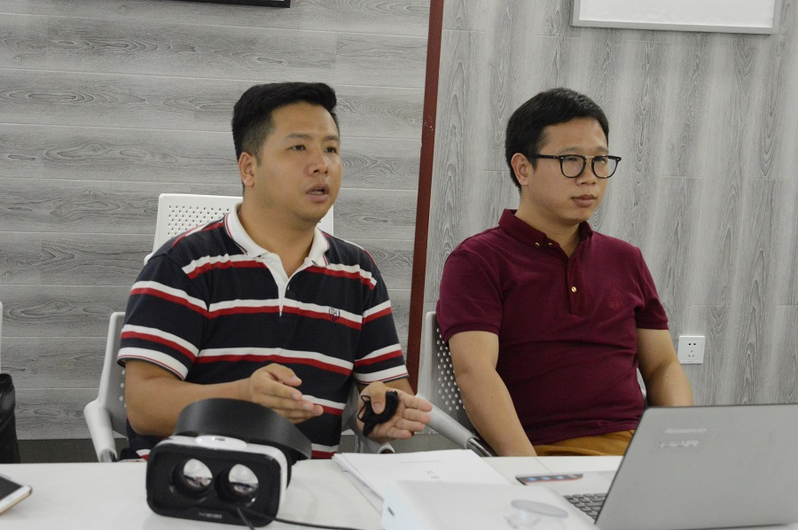

长沙云孵化器第二期21大项目进驻 各行业新态层出不穷
2016年08月11日
启动快一年的时间，长沙高新区微软云暨移动应用孵化平台（以下简称“长沙云孵化器”），公共办公区域的卡座已被43支团队全部“瓜分”完毕。这在中电软件园9栋7层，这层3000多平方的场地里面，承载了43个创业的梦想，或者更多的梦想。
有着创新创业沃土的麓谷早已形成了“众创空间—孵化器—加速器—专业园区”的专业孵化链条，各类孵化器、加速器20多个，其中国家级孵化器10个。在不久的未来，这些在专业孵化链条上进行孵化的初创企业，将以鹰的姿态，引领行业的走向。

创翼——为你的梦想加上翅膀
经过三场路演的厮杀，21家团队从100多个项目中筛选出来，进入长沙云孵化器进行项目孵化。找红娘创始人周霞，曾先后任职于世纪佳缘深圳公司总经理、华南区高端猎婚总监；珍爱网高端猎婚全国总监。作为一名女性创业者，她有着巾帼不让须眉的气势，来参加长沙云孵化器路演的时候，肚子里面的猴宝宝也5个月了，但丝毫不影响她对整个团队以及项目的把控。在路演现场，眉飞色舞的讲着她的红娘项目，如她肚子里面正在孕育的猴宝宝一般，对这个项目也是倾注了她全部的心血。在说到中后期的发展时，周霞谈到，她想依托平台来做红娘个人管理中心，布局婚恋后市场和线下渠道。
在国家鼓励“双创”的机遇下，一群90后盯上了粉红经济。团队核心成员都是90后，其中最小的是96年的。在中国的粉红市场存在巨大增长空间下，粉红经济的蓝海待开发。但“粉红”在哪里？如何打通粉红经济的任督二脉？同爱网络通过“互联网 + 线下服务 + 公益”构建了一条相对完整的同志社区生态圈，为目标群体提供包括“内容”、“社交”、“法律”及健康服务，所有产品独立运作但又互相协作和配合。
 找红娘团队创始人周霞，身孕5个月，在长沙云孵化器进行创业项目的路演
找红娘团队创始人周霞，身孕5个月，在长沙云孵化器进行创业项目的路演
大咖齐助阵，合力搭建“双创”平台
为帮助团队健康成长，孵化平台设立了名为畅享课堂的行业大咖分享技术、创业经验等精品培训课程，人均场次100人以上，现已举办了五期。每月设立了VC来了活动，邀请北上广深和本土投资人来长沙和入孵团队一对一进行项目接洽，截止到现在，一期入孵的团队中已经有2家团队拿到天使投资。有4家团队拿到投资意向。
为让团队体验一线城市的创业、投资氛围，孵化平台举办了一场“创业春锋渡·湘军首都行” 北京创业项目招商和创业资本对接活动。此次活动平台带领创业团队前往北京访问互联网行业领袖（周逵、王军等）、考察了国内知名投资机构（红杉资本、德迅投资等）、对接了创业明星企业及移动互联网行业技术专家（微软、京东、滴滴、大唐电讯公司、Testin云测、图灵机器人等），洽谈移动互联网企业回湘发展项目（3W咖啡、创投圈等）、参观优秀的孵化平台（联想之星、36氪、车库咖啡、天使汇、黑马会等）。以实际行动帮助湖南移动互联网初创企业解决在生存发展中遇到的问题，吸引北京优秀创业项目、创业优秀人才回湘发展生根，为“走出去引进来”的宏伟目标迈出重要的一步。
在2016年6月，长沙云孵化器在高新区政府、创业服务中心的帮助下，完成了第二期21支入孵团队的招募，招募的项目包含了手机游戏、移动互联网、智能制造、物联网、智慧交通等行业，孵化平台为团队提供全免费的办公场地、入孵期间免费提供30万微软资源包、对接了15家包含红杉、IDG、苏州元禾在内的驻场基金，此外还聘请了包含微软开发者支持计划市场总监Virginia Liu、微软（中国）政府及公共事业部云计算总监楚国华、元禾原点创投执行合伙人费建江、testin云测试平台创始人王军、中央美术学院数码媒体工作室主任费俊等行业大咖和专家在内的28位创业导师；确定了以微软全球最有价值技术专家（MVP）陈锐、马宁领衔的技术指导专家团队；对接了元禾原点创投、睿鉴创投、高新创投、中大联合等6家VC。他们每月轮流对孵化平台的入孵创业团队进行培训、面谈与答疑。

各项目激烈角逐经过
未来已来，站在风口飞起来吧
孵化平台将在今年9月底做第一期孵化团队的“演示日”，即DEMO DAY，在DEMO DAY中，孵化平台将全方位更立体展示第一期团队在这六个月中的成长以及孵化成果。同时，对于有创业想法的创客，可以把商业计划书投递到招募邮箱：teams@msstartup.cn
